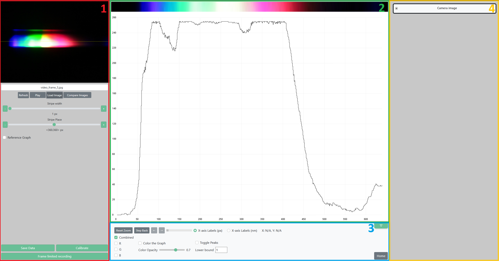
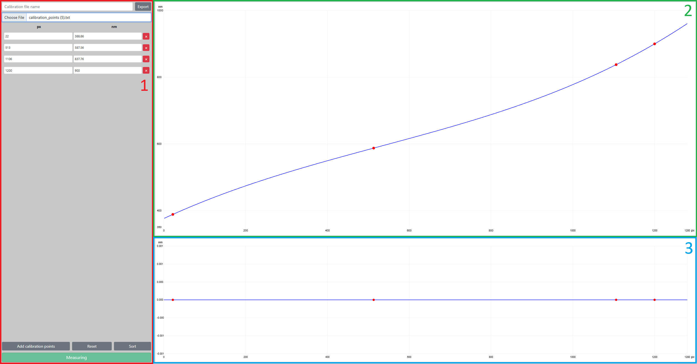

This guide will walk you through the main features of the application, divided into sections to help you get started. Use the sidebar to navigate between sections.
Each section starts with a brief explanation, followed by step-by-step instructions and relevant images.
After clicking the "Start" button on the homepage, you will be directed to the main application interface. The interface is divided into several key areas, each with a specific purpose:
Every Sidebar and Drawer section can be collapsed or expanded by clicking the arrow icon in the top right corner of each panel. The arrow will be visible when you hover over the panel. The right sidebar is collapsed by default.
After clicking the "Calibrate" button in the left control panel, the layout changes to calibration mode. The interface here is also divided into areas with a specific purpose:
This section helps you connect and configure your camera or image for spectrum analysis. You will learn how to select your camera, adjust exposure, and switch between live video and image mode.
Camera Controls Overview:
The video above demonstrates the camera controls available in the application. Here is how each control works:
Selection Stripe Controls:
The selection stripe defines the area of the image used for spectrum analysis. You can adjust these controls in the left sidebar:
Calibration aligns pixel positions with real-world wavelengths (nm). This section explains how to enter calibration points, import/export calibration files, and interpret calibration graphs.
Calibration Workflow:
.txt file with pairs in the format pixel;nm per line.
The selection stripe defines the horizontal band of the image or video that is used for spectrum analysis. It is displayed in the camera/image input as a yellow stripe. Adjusting the stripe allows you to focus on the region of interest and optimize your measurement.
How to Use Stripe Controls:
This section explains how to analyze the spectrum graph, zoom into regions, switch axis labels, toggle color channels, and highlight peaks. The video below demonstrates the main graph controls and analysis workflow.
Graph Analysis Workflow:
The reference graph feature allows you to overlay previous measurements or imported data for direct comparison with your current spectrum. This is useful for tracking changes over time or comparing different samples.
.xlsx file using the Add Reference from File button.
You can upload and compare up to 5 images side-by-side. Each loaded image is shown as a separate line on the graph, with its own color and controls.
The Frame Limited Recording (FLR) feature allows you to automatically capture a series of images and/or spectrum graphs at set intervals. This is useful for time-based experiments, monitoring changes, or collecting data for averaging.
How to Use Frame Limited Recording: